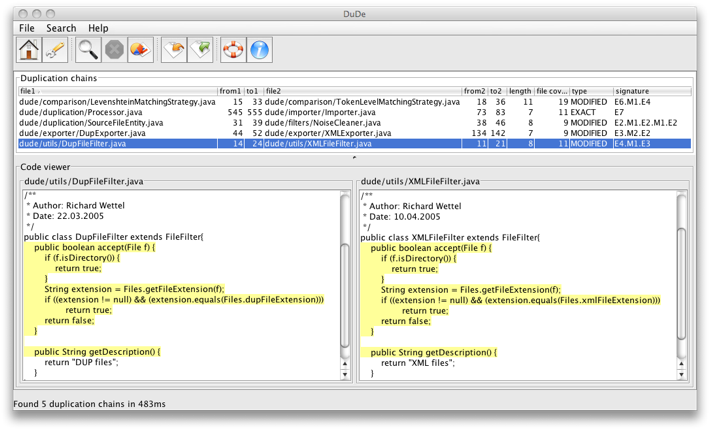

Description
DuDe is a text-based, language-independent code duplication (code clones) detector, gravitating around the concept of duplication chain. The tool is written in Java and runs on every major platform. Here is a snapshot of DuDe, applied on its own source code:

Trivia
- DuDe has been successfully used along with other tools for assessing the quality of a large C++ system (over 50'000 files) developed by a telecommunication company. The effort was sustained by 3 research groups coming from the swiss universities of Lugano and Bern and the university of Timisoara, Romania.
- Although it was not the purpose of the tool, DuDe has been a real help in detecting fraud in student assignments.
- DuDe served as concept proof and tool support for both my diploma and master theses, in which I researched a lightweight approach on language-independent clone detection. The published outcome of this research also includes a full paper at SYNASC 2005, a poster at ICSM 2005, and a tool demo of iPlasma at ICSM 2005, all available on my Publications page.
- I developed DuDe during the times I was an active member of the LOOSE Research Group at the "Politehnica" University of Timisoara, Romania. That is why DuDe is available in two forms: this standalone version and one integrated in the iPlasma reengineering framework, where the results of the detection are placed in the context of other software metrics to detect software design flaws.
- In the book Object-Oriented Metrics in Practice, written by Michele Lanza and Radu Marinescu in 2006, the authors used for the part that addresses the disharmony called Relevant Duplication my approach based on duplication chains and DuDe as tool support.
- DuDe has also been ported to Smalltalk by Mihai Balint and Tudor Girba and integrated in the Moose software analysis environment under the name of SmallDude.
- The DuDe logo on this page is made of elementary duplication chunks linked by non-matching gaps, which fully complies with the scatterplot-inspired mechanism we use to build the duplication chains.